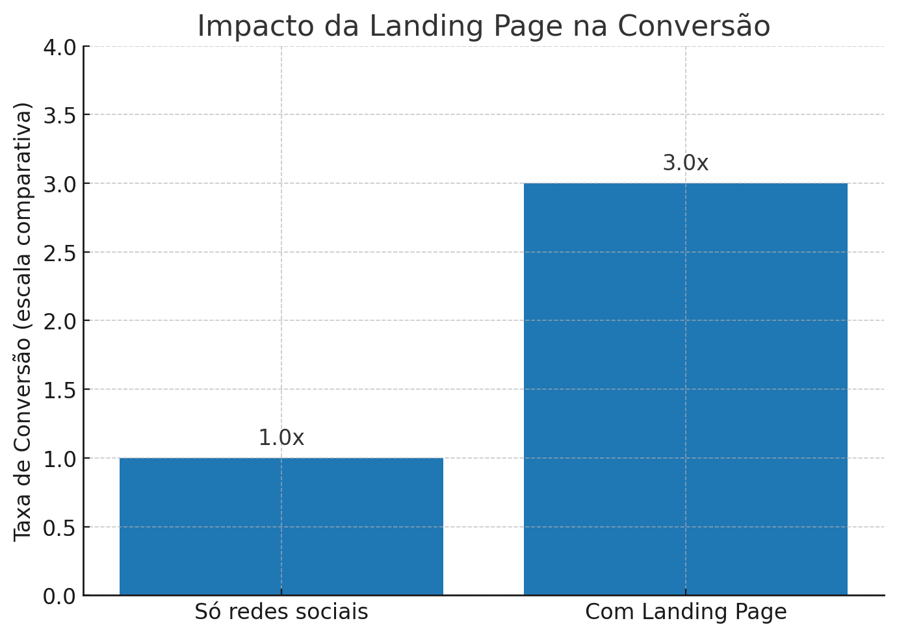

Transforme visitantes em clientes com páginas profissionais e rápidas.
Suporte ágil e direto para você não perder tempo.
Processo fácil, sem burocracia e 100% online.
Páginas otimizadas para atrair e converter mais clientes.
Compatível com celular, tablet e computador.

Independente do tipo de negócio, adaptaremos sua landing page para a sua necessidade. Alguns diferenciais de cada tipo:
Sitem Agência Digital